What a node holds, and what it reads off it
The state
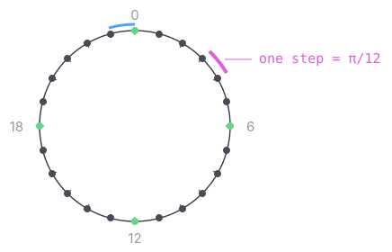
t ∈ {0 … 23}
a state, not a number — t ± 1 follows a link. 6 is a quarter turn, 12 a half
t is the node's TILT, and the whole of what it stores — one state, persisted as one angle. The normal and the bottom on the next card are read off it
angle = (π/12) · t
the only thing that leaves this kind
23 → 0 — one link like any other, and the only reason the ring closes
What is read off the tilt


t — the tilt
t + 6 — the normal, and what it sends
t + 12 — the bottom
links, not sums — the triad turns as one, and nothing wraps
ONLY t is updated, and only ever by this node's own loop (Top). The normal and the bottom are links off it — quarter and opposite — so they are not two more vectors to move, and cannot fall out of step with the tilt
the normal is what LEAVES (outgoingVector); the bottom is drawn and never sent

The angle length, and what it says the pair is at

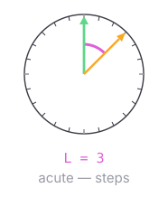
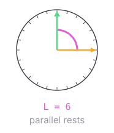
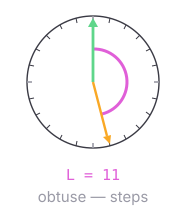
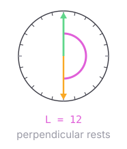
t — this node's own tilt
a — the direction that arrived
L — short for angleLength, the slots between them the short way round, so never more than 12
the two slots have TWO arcs between them, one each way round, and L is the shorter — that choice is what min is for. It is not wrap handling: a tilt is a state on the ring and cannot leave it, so turning never does arithmetic at all
0 and 12 are where perpendicular stops and 6 is where parallel does; every other length — acute below the quarter, obtuse above it — is ordinary to both, and gets turned over
the RULE does not read L. It counts from the nearer END of the tilt line (nearerEndCount), which is under 12 by construction and remembers which end it came from — and that fold is why perpendicular's two lengths here, 0 and 12, are ONE count of 0 to the code. L survives for the one question about the two TILTS rather than the arrival: which mode the pair runs
integers, so exact — no dot product, no epsilon to tune

The two machines it is
The tilt as a state machine — 24 states, two links out of each

next prev — the only two moves there are
a turn FOLLOWS one of these links, so it cannot land between two states or off the ring, and no rule anywhere adds 1 or takes a modulus
the seam in the middle is 23 → 0. Nothing detects it and no rule mentions it — the last state's next simply IS the first, fixed when the ring was built
The mode as a state machine — three modes, four transitions

setting is where a node starts and what a reset restores — it is the zero value, so a node is in it without anything having to put it there
there is NO edge between perpendicular and parallel: a chosen mode sticks, and a second choice arriving mid-run is ignored
every case, mode by mode and length by length, is on Cases
Both machines, as a transition function
A state machine is its states, its inputs, and where each input sends each state. Written that way the two above are small enough to read in full — and the difference in size between them is the point: one has 24 states and two inputs, the other three states and two, and neither has anything else in it.
the tilt
the mode
the tilt ring is the Cayley graph of ℤ₂₄ on the generator 1 — which is exactly what "24 states, two links out of each" says
the mod 24 above is the DEFINITION the links implement, not an operation the code performs: newRing resolves next and prev once, so a turn is a field read and no arithmetic runs at a turn at all
δ(R, a) = R for a chosen mode is the whole of "a choice sticks", and it is why there is no edge between perpendicular and parallel
The arithmetic the machine comes out of
Nothing below mentions the machine — no tilt, no partner, no arrival, no mode. It is a fact about two numbers on a ring of 24: shift one of them by 6, and the only gaps whose length lands on 0, 6 or 12 are the four quarter gaps. That is true whether or not anything is running. Read it back with x as this node's tilt and y as the partner's, and it is the machine: 24 states with two links out of each, a line that reversing does not change, and the two stopping counts — which are therefore not chosen, but counted.

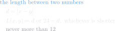
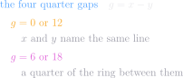
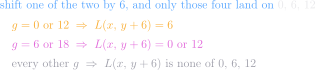
this is where stoppingCounts comes from. { 6 } and { 0, 12 } are not two facts to remember — they are the four quarter gaps, and the shift by 6 above is the quarter turn the partner adds when it sends its normal instead of its tilt
counted from the NEARER END the second of those is a single 0: 0 and 12 are the same count taken at the two ends of one line, which is why a mode's row is { 0 } or { 6 } and never a pair
it also explains the shape the audit found: the two modes are a half turn apart in g, so their two distances sum to a constant, which is why one is the other upside down
guarded by TestRestingLengthsFollowFromTheGaps, which sweeps every partner-and-tilt pair and checks that no other gap lands on a resting length by accident
What an arrival does
Where each mode stops
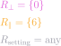
Which mode to be in — measure, then decide, and it is the only update that reads the arrival's own tilt

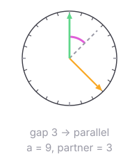

t — this node's own tilt
a — what arrived, which is the partner's NORMAL, already a quarter turn off its tilt
the partner's own tilt, backed out of the arrival — dashed, because it is inferred and never sent
this is the one place the gap between the two TILTS is measured; everything else measures the arrival directly
it runs once, on the first arrival, and the answer sticks until a reset
Which slot to go to — measure, then decide
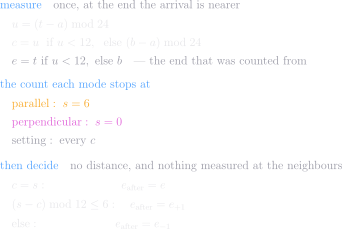
ONE measurement, and it is taken where the node already is — not at the two places it could go. The old form read ℓ at t, t+1 and t−1 and compared the results, which is a machine choosing the better of its next two positions without working out where it was heading
the way DOWN never appears: the two ways round the count-ring sum to 12, so asking which is shorter is asking whether the way up is at most 6
the two f lines being 6 apart is the audit's "one mode is the other upside down", written as arithmetic
an update writes the END IT COUNTED FROM — the top for half the ring, the bottom for the other half — and reads the other straight off its opposite in the same statement (setTop / setBottom). The normal still follows, because it is a link and nothing moves it
f is a quantity of THIS PAGE, not of the node. One arrival turns the tilt at most one slot, so the code asks a comparison and a subtraction and never works out a distance at all — settled tests c against the mode's one stopping count, and step tests the way up against a quarter turn
the deciding never names a mode — by the time it runs, the mode is spent, having produced the one count stopping returns
f survives as a test-side measurement, because "each step lands nearer than it started" cannot be said without one — checked over both lattices and every tilt-and-arrival pair by TestFromRestIsTheQuarterOffset
ℓ, ℓ₊ and ℓ₋ are one function called three times — settled uses the first, step the other two
The other updates

The same two decisions, worked
One step, worked

settle? c = 10 is not parallel's stop of 6 → no
up? (6 − 10) mod 12 = 8, more than a quarter turn → no
t_after = t − 1 = 9
the two tilts whose angle length is a resting 6 for this arrival
the only two slots it can turn to — a tie turns up
A run, from START to the halt
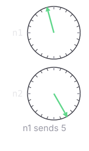
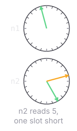

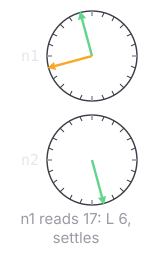
t — each node's own tilt
what just arrived at that node
both ends run R = { 6 }, chosen from the gap at the first arrival
one bead per send, and settling sends nothing
What leaves the node, and what a reset puts back
What a report puts on the frame

(π/12) · t — persisted, position.json
(π/12) · (t + 6) — a link, never stored
(π/12) · (t + 12) — a link, never stored
(π/12) · r — drawn when set, never
persisted
centre · reach · pole · ring axis — a tilt touches none of them
What a reset puts back


the tilt goes to 0 and the other two follow, being links off it
both queues emptied — a direction left waiting would step t straight back off 0
beads still crossing dropped · each node clears twice, and the marker's clear lands last
The map into the code
Where every rule above lives — the names open the file at the definition
| file | definitions | |
| nodes/PairNode/node.go — the decision | Update · handleVectorCycle · stepFromVector | |
| nodes/PairNode/vectors.go — the directions it computes | coplanarNormal · bottomTilt · outgoingVector · syncTiltIndex · syncReceivedVector | |
| nodes/PairNode/edits.go — the panel, and the reset | applyTiltEdit · clear · drainIn | |
| nodes/PairNode/ring.go — the 24 states | tiltState · ring · at · arrivedState · seedState · angleLength · setTop · setBottom · adoptLattice | |
| nodes/PairNode/machine.go — the one rule | tiltMachine · stoppingCounts · nearerEndCount · machineForGap · adoptMachine | |
| nodes/Wiring/tilt_vector_channel.go | PollRecvVector · SendVectorLatestNonBlocking · FullTurnThetaIdx | |
| nodes/Wiring/pair_node_self.go | EmitGeometryOnce · Step · SetTiltIndex · SetReceivedVector · ClearOutBeads | |
| nodes/Wiring/node_geometry_stream.go, node_geometry_center.go | emitGeometry · writeStreamFrame · applyCenter | |
| nodes/wire/clock.go | Copy · SleepCycle · pulsesPerCycle · ApplySpeedNonBlocking | |